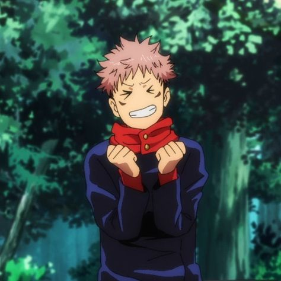
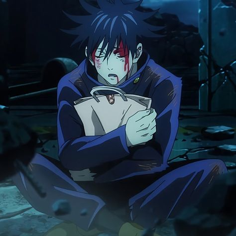
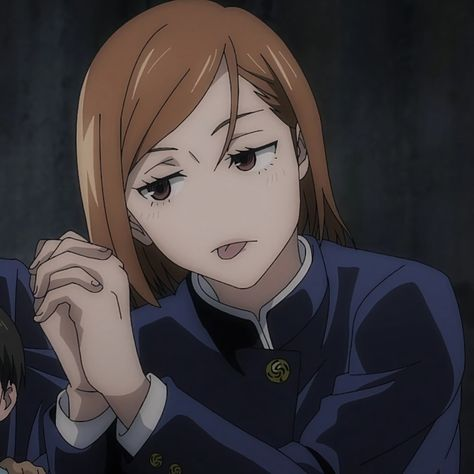

Jujutsu Student Sorcerers

Yuji Itadori
Yuji Itadori is the main protagonist of the Jujutsu Kaisen series. He is the son of Jin Itadori and Kaori Itadori, and the grandson of Wasuke Itadori. Yuji was living a normal life in Sendai City until he encountered Megumi and ate one of Sukuna's fingers. After becoming Sukuna's vessel, Yuji began attending Tokyo Jujutsu High alongside Megumi and Nobara as first-year students.

Megumi Fushiguro
Megumi Fushiguro is the deuteragonist of the Jujutsu Kaisen series. He is a grade 2 jujutsu sorcerer and first-year student at Tokyo Jujutsu High alongside Yuji Itadori and Nobara Kugisaki. Megumi is the step-brother of Tsumiki Fushiguro and as the son of Toji Fushiguro, Megumi is also a descendant of the Zenin Clan. Megumi was born outside the clan as Toji's trump card and was eventually found by Satoru Gojo, who mentored him and enrolled him at Jujutsu High as his student.
